By the end of today, you'll have combined both. A real campaign, generating leads for your practice, built with AI.
Proof
This is what a lead machine looks like
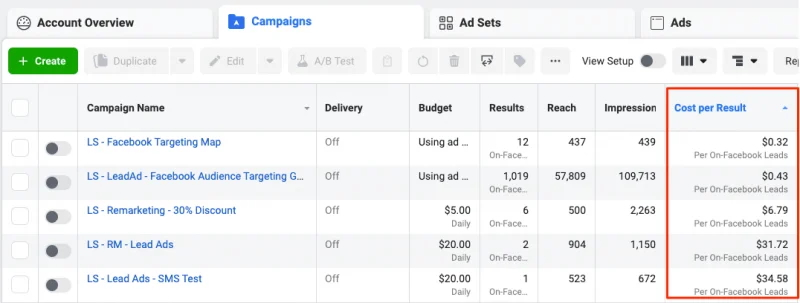
A real Ads Manager account running lead campaigns. Look at the Cost per Result column: the good ones deliver leads for under a dollar.
In 3 hours, you build your own version of this.
The math
One afternoon of calls vs $10 a day
Cold calling
100 calls → 30 pick up → 5 meetings → 1-2 clients
2-3 hours of your day, every day
Rejection after rejection
A $10/day Meta ad
Runs 24/7, even while you're with clients
1-3 leads a day, delivered to your phone
They opted in. They want to hear from you.
30 minutes to set up. Then it runs itself.
The objection
"My clients aren't scrolling Facebook"
A US advisor's campaign, published numbers: 452 leads at US$5.30 each on $100/day
The people who booked averaged US$495,000 in investable assets
The single biggest lead held US$2.3 million
Wealthy people scroll like everyone else. The only question is whose ad they see.
Before you spend
They Google you before they book
A seminar prospect judges your office. An online lead judges your search results.
Search your own name tonight. What a stranger sees is what every lead sees.
Minimum bar: a profile photo, a bio that says what you do, one place where reviews or testimonials live
Don't be a secret agent. If your profiles hide that you're an advisor, the ad works and the trust check fails.
Live demo
Watch the AI do 30 minutes of work in 30 seconds
I'm a financial advisor in Singapore. Help me write a short lead magnet PDF
(5-7 key points) on the topic: "5 Retirement Mistakes Singaporeans Make
Before 40". My target audience is working adults aged 25-40. Keep the tone
practical, friendly, and jargon-free.
The next 3 hours
Build a lead magnet with AI→Create a Meta campaign→Launch it. Today.
You don't need to be tech-savvy
You don't need marketing experience
I do every step on this screen first. You follow on your laptop.
Open your laptops. Let's go.
2
Module 2 · 45 minHands-on
Build your lead magnet with ChatGPT
Written, designed, and saved as a PDF, all in one chat. Prefer Claude? Same prompts work there too.
First, the concept
What is a lead magnet?
A free guide you trade for contact details.
A stranger won't book a call from an ad. Too big an ask.
But they will take a free PDF that solves a problem they have.
The strongest magnets give away something other advisors charge for.
To get it, they give you their name and phone number.
That's a lead. Someone who raised their hand about a money problem.And you're the advisor who helped them first, before asking for anything.
Principles
What makes a lead magnet work
One problem
Pick the sharpest pain, even though you do more. "5 CPF mistakes" pulls your future client; the rest is for the call.
Specific title
The title says who it's for and what they get. Clever dies; clear converts.
10-minute read
Nobody wants a 150-page ebook; they'd just ask ChatGPT. Checklists, timelines and calculators get opened.
Best advice, free
Held-back content reads as fluff. The generosity is the marketing.
One next step
Every page ends at the same door: the free consultation.
Ship, then judge
Built in an afternoon, judged by cost per lead after 3 days, improved next week.
Lead magnet principles · AI Ads Launch Lab · @leotan_js
Before you type
Prompting is briefing, not coding
You already do this every day: you brief your assistant, you tell a client what to bring, you explain to a junior what "good" looks like. Same skill, new intern.
I'm a financial advisor in Singapore.Help me write a short lead magnet PDF (5-7 key points) on the topic: [YOUR TOPIC].My target audience is working adults aged 25-40 in Singapore.Keep the tone practical, friendly, and jargon-free.
WHO you areWHAT you wantWHO it's forHOW it should sound
The prompt formula · AI Ads Launch Lab · @leotan_js
That's the whole formula. No syntax, no commands. Typos are fine; it reads intent, not grammar.
The fears
Four beliefs to leave at the door
"I'm not technical"
If you can type a WhatsApp message, you're qualified. Today involves zero code. The box takes plain English, Singlish included.
"What if I break something?"
You can't. The worst possible outcome is a bad answer. Delete the chat, start again; it costs nothing and nobody saw it.
"It won't sound like me"
The first draft won't. Then you tell it who you are and how you talk, and edit the result. You always get the final word.
"Isn't this cheating?"
The advice, the judgment, the relationship: still yours. The AI just types faster than you. Nobody calls a calculator cheating.
The rhythm
Say it. See it. Shape it.
Say it: give the four-part brief
See it: read what comes back. It's a draft, not a verdict.
Shape it: "shorter" · "warmer" · "more about CPF" · "less jargon" · "give me 3 versions"
Repeat. Two or three rounds usually gets there.
You're not being tested. You're directing an intern who never gets tired, never gets offended, and never bills you. You'll run this loop ten times today; by tonight it's a habit.
Step 1 of 6 · ~2 min
Pick your topic. Don't overthink it.
Retirement
"5 Retirement Mistakes Singaporeans Make Before 40"
CPF
"CPF Optimization Checklist for Working Adults"
Insurance
"How Much Insurance Do You Actually Need?"
Pick the one closest to your niche. You can build another one next week; today is about learning the machine.
Step 2 of 6 · ~5 min
Generate your content (Prompt 1)
I'm a financial advisor in Singapore. Help me write a short lead magnet PDF (5-7 key points) on the topic: [YOUR TOPIC].
My target audience is working adults aged 25-40 in Singapore.
Keep the tone practical, friendly, and jargon-free. Include a brief intro, the main points, and a closing that invites them to book a free consultation.
The AI has written your 5-7 points. Thumbs up when you're here.
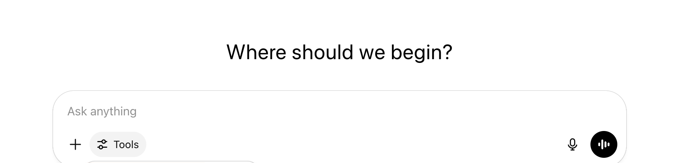
chatgpt.com. One box. Paste the prompt, swap in your topic, hit enter. (claude.ai looks nearly identical.)
Check your result
What a good reply looks like
5 Retirement Mistakes Singaporeans Make Before 40
Most people in their 20s and 30s treat retirement as a someday problem. By the time it becomes urgent, the easiest years to fix it are already gone...
1. Treating CPF as the whole plan CPF is a solid base, not a full retirement plan. Between the Full Retirement Sum and rising costs of living, most people need savings outside CPF...
2. Letting cash sit idle for a decade...3-4 sentences...
3, 4, 5 ... same shape, one mistake each ...
Closing: "If you'd like a second pair of eyes on your retirement plan, book a free, no-obligation consultation."
Real AI output from the exact prompt (this one from Claude; ChatGPT's looks similar). Yours will differ; check the shape: intro, 5-7 points with short explanations, and a closing that asks for the meeting.
Step 3 of 6 · ~5 min
The first draft is a draft. Talk to it.
Tell it what to change
"Make it shorter"
"Focus more on CPF"
"Remove jargon"
"Give me 3 versions"
"Make it more casual"
Then read it like an advisor
You're the expert, not the AI
Fix anything factually off before it goes out under your name
Compliance rules still apply to AI-written content
Step 4 of 6 · ~8 min
Make it beautiful (Prompt 1b)
Now turn this guide into a beautifully designed document. Build it as one self-contained HTML file I can download.
Design: navy blue and gold, modern, generous spacing, large readable text. A full-page cover with the title and "A free guide by [YOUR NAME]", one section per point, and a closing page with a "Book your free consultation" call to action plus my contact: [PHONE] / [EMAIL].
Make it print-perfect: A4 pages, each section starting on a new page, print styles included. Give me the finished .html file to download.
Paste into the same chat, download the .html file it returns
Double-click the file to open it in your browser, then Cmd+P (Ctrl+P on Windows) → Save as PDF
A PDF that actually looks designed, saved on your laptop. Thumbs up.
If it balks
Two fixes when the PDF won't come
"I can't create a downloadable PDF"
You're probably logged out; signed-out ChatGPT can't make files at all. Log in and resend Prompt 1b. Still no file? Say "put the full HTML in the chat instead" and raise your hand; we'll save it together in 30 seconds.
Your typing lands inside the document
ChatGPT sometimes opens your guide in an editable side panel. Anything you type there goes into the guide, not to ChatGPT. Click the message box at the bottom of the screen first, then type your next prompt.
Both of these are 10-second fixes. Neither means you did anything wrong.
Step 5 of 6 · ~5 min
Read it, then fix it with words
Open the PDF. Read it once, cover to closing. Your name is on it; compliance rules apply.
Want changes? Back to the chat: "change [X] and give me the file again". Download, print, done.
A finished PDF you've actually read, saved on your laptop. Thumbs up.
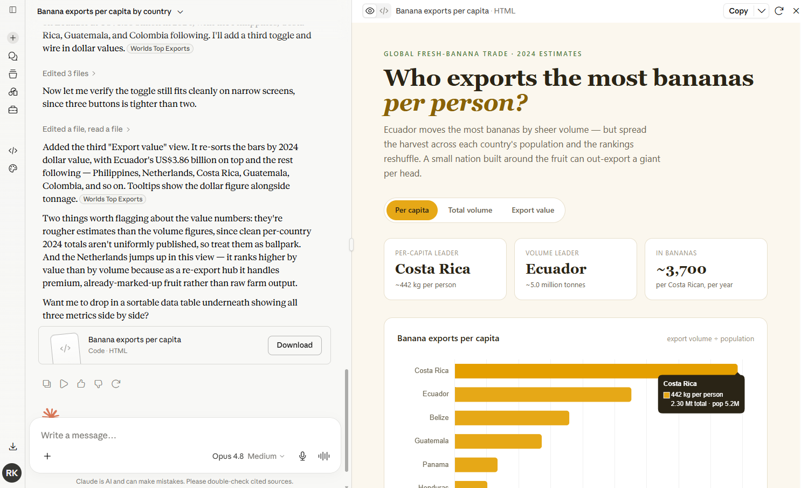
Claude designs it here instead
Using Claude? Identical mechanic: same Prompt 1b, it designs in a side panel. Download, open, Cmd+P, Save as PDF.
Step 6 of 6 · ~8 min
Your cover image, from ChatGPT
Create a square 1:1 cover image for a free PDF guide called
"[GUIDE TITLE]". Professional financial-services style, navy blue
and gold, the title in large bold text, a small "FREE GUIDE" badge,
clean simple background, no people, space around the text.
Same chat, one more message → check the spelling in the image, regenerate if the title is garbled
Hover the image → download. This becomes your ad image in Module 4.
A PDF and a square cover image, both saved on your laptop. Thumbs up.
15 minutes
Break
Stuck on anything? Come to the front now. Everyone launches in Module 4, so we fix problems during the break.
3
Module 3 · 25 minLaptops closed, just watch
Meta ads 101
How it actually works, in plain English.
The structure
Think of a filing cabinet
Campaign = the drawer. Your goal: get leads.
Ad set = the folder. Who sees it, and how much you spend.
Ad = the document. What they actually see in their feed.
You create one campaign, one ad set, one ad. That's the whole build.
The inputs
Meta needs 3 things from you
WHO
Who should see your ad. Targeting.
WHAT
What they see. Your image and copy.
HOW MUCH
Your daily budget.
Everything else is details. Get these 3 right and you get leads.
The format
Why we use lead form ads
Traffic ad (the old way)
See ad → click → your website → find the form → type everything → maybe submit
Lead form ad (our way)
See ad → click → form opens inside Facebook, name and number already filled in → done
A real one: a free guide, traded for contact details. Yours will look like this.
Targeting
Who sees your ad
Location: Singapore
Age: 25-45younger for savings topics, older for retirement
Interests: financial planning, investments, CPF, retirement, insurancepick 3-5 that match your topic
Start broad. The algorithm reads who stops on your ad and finds more of them; every restriction just raises the price. Your copy does the filtering, not the age box.
Compliance · One checkbox
The category that keeps your account alive
Campaign setup asks about Special Ad Categories. If it lists Financial products and services, that's you. Declare it.
Declaring it removes fine-grained age and gender targeting. That's fine: your copy now does the targeting.
Skipping it feels clever until Meta notices. Rejected ads first, then the account. Bans follow the person, not the accounta fresh account won't reset you
On the form, collect name, phone and your one custom question. Age, income, everything else: ask on the call, never on the form.
One honest checkbox costs you a little targeting. Gaming it can cost you Meta ads for good.
Money
Budget reality check
Daily budget: $5-10 is plenty to start
Cost per lead in Singapore: $3-15depends on offer and audience
Minimum test: 3 days. Never judge after day 1.
Total for your first test: $15-30
Never press Boost Post on your page. Same money, none of the controls you're learning today
Less than a nice dinner, for real leads on your phone. Pause anytime; you only pay when people see the ad. Agencies start advisors at US$10-50 a day, so $5 is the same machine on a training dial.
The copy
Lead with their problem, not your name
Problem
"Retiring into a market crash can drain your savings years earlier than you planned."
Agitate
"Most portfolios aren't protected against it, and most people find out too late."
Solve
"My free guide shows three ways to protect yourself. Download it below."
"Worried about running out of money in retirement?" speaks to 2 in 3 readers. "Hi, I'm John from XYZ Financial" speaks to almost none.
Your angle also picks your leads: tax content pulls wealthier prospects, income-planning content pulls pre-retirees
Principles
Rules that outlive every screen change
Image, copy, offer
In that order: the image stops the scroll, the copy earns the tap, the offer wins the lead.
Broad targeting
The algorithm finds your people. Every restriction raises the price of a lead.
Data before opinions
48 hours and 500 impressions before any verdict. Feelings lie; cost per lead doesn't.
One change at a time
Change two things and you learn nothing. Duplicate, swap one, compare.
Always-on beats bursts
$5 every day beats $150 on launch weekend. The machine rewards consistency.
Own the list
Campaigns get paused; the lead list is yours forever. Export it weekly.
Meta ads principles · AI Ads Launch Lab · @leotan_js
4
Module 4 · 60 minHands-on
Build and launch
I do each step on this screen. Then you do it. Thumbs up at every checkpoint before we move on.
The map
All 10 steps, one screen
Open adsmanager.facebook.com
+ Create → objective: Leads → name it
Audience: Singapore, 25-45, 3-5 interests
Budget: $5/day, end date 3 days out
Identity: your Page + accept Lead Ads Terms
Upload your ChatGPT cover image
AI writes 3 copy variations (Prompt 2)
Paste: primary text, headline, description + CTA
Instant form: More Volume, name + phone + concern
Final checklist → Publish
Launch checklist · AI Ads Launch Lab · @leotan_js
Step 1 of 10 · ~2 min
Open Ads Manager
adsmanager.facebook.com
You see a dashboard like this (yours will be emptier). Error or setup screen instead? Raise your hand.
next step starts here
The Campaigns dashboard. Yours has no rows yet; the green Create button is what matters.
Step 2 of 10 · ~3 min
Create the campaign
Click the green + Create button, top left
Objective: LeadsMeta is literal: ask for clicks, it finds clickers
Continue
Name it something you'll recognise "Retirement Guide Lead Gen"
You're on the Ad Set screen. Thumbs up.
1. pick Leads
2. Continue
The screen you'll see. Two clicks.
Step 3 of 10 · ~10 min
Audience: the WHO
Performance goal: Maximise number of leadsusually pre-selected; leave it
Audience shows Singapore, an age range, and 3-5 interests. Thumbs up.
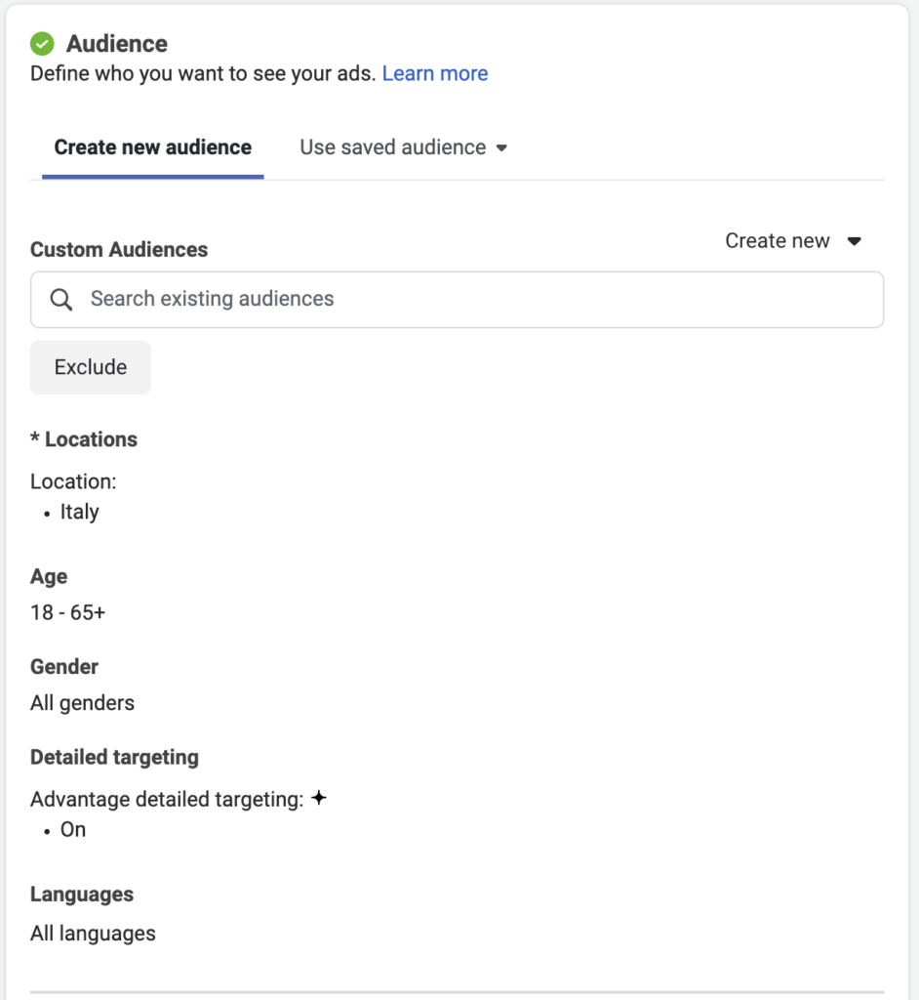
yours: Singapore
yours: 25-45
The Audience section. The example shows Italy, 18-65+; set yours as labelled.
Step 4 of 10 · ~5 min
Budget: the HOW MUCH
Daily budget: $5$10 if you're comfortable
Start date: today
Tick "Set an end date": 3 days from today
$5 a day. Less than your kopi and lunch.
$5/day, running 3 days from today. Thumbs up.
type 5 here
tick this, +3 days
Budget & schedule. Two changes: the amount, and the end date.
Halfway there
Drawer done. Folder done. Now the document.
✓ Campaign (the drawer): goal set to Leads
✓ Ad set (the folder): who sees it, $5/day for 3 days
→ The ad (the document): what people actually see. That's steps 5-9.
Click Next (bottom right) until the screen says you're editing the Ad. The left sidebar shows all three levels; you can always click your way back.
Your screen shows the Ad level: Identity, Ad creative, Destination. Thumbs up.
Step 5 of 10 · ~3 min
Pick your Page
Under "Identity", select your Facebook Business Page. This is who the ad comes from.
First time? A prompt asks you to accept Meta's Lead Ads Terms. Click through and accept; it takes 10 seconds.
Your Page is selected and the terms banner shows accepted. Thumbs up.
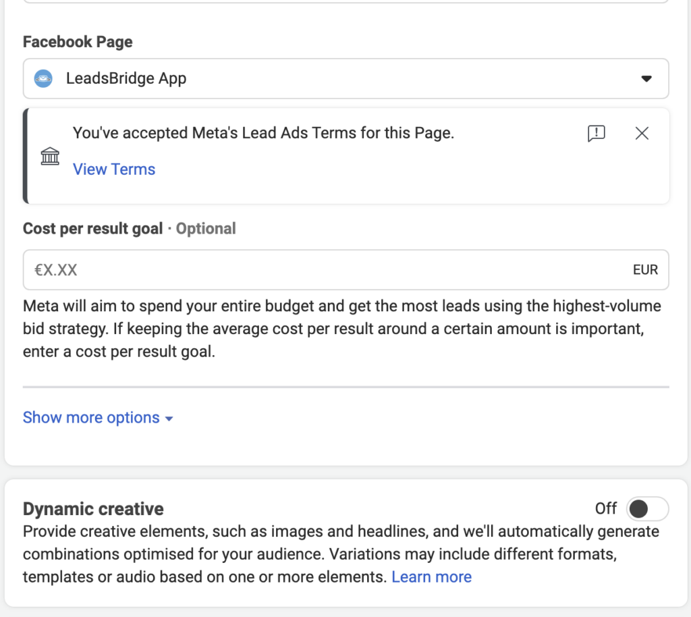
The Page dropdown, and the terms notice you want to see under it.
Step 6 of 10 · ~4 min
Upload your image
Ad Creative → Add Media → Add Image
Upload your ChatGPT cover image from Module 2
Watch the preview panel on the right; your cover appears in a fake Facebook feed
Your lead magnet cover shows as the ad image in the preview. Thumbs up.
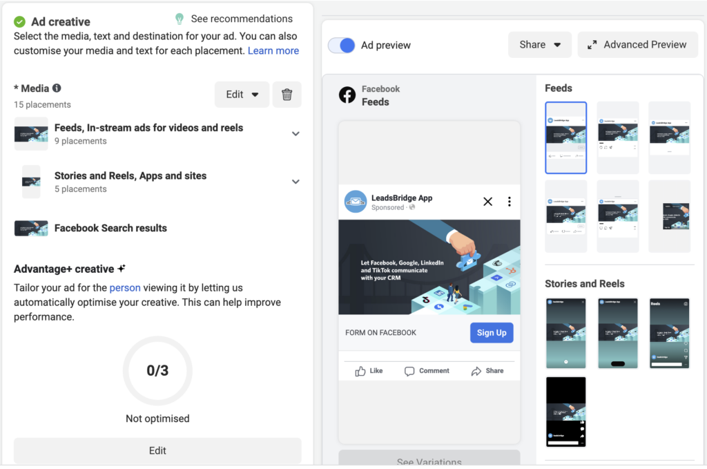
your ad, live preview
Ad creative on the left, live preview on the right. Watch your ad take shape there.
Step 7 of 10 · ~5 min
Generate your ad copy (Prompt 2)
I'm running a Meta lead form ad for my financial advisory practice in Singapore.
My free guide is: [YOUR LEAD MAGNET TITLE].
The one problem it solves: [THE PROBLEM].
My audience: [WHO IT'S FOR, e.g. working adults in their 30s].
Write me:
1) Primary text (under 125 characters). Open with their problem as a
question. Never open with my name or my firm.
2) Headline (under 40 characters): the guide's name plus the word "free"
3) Description (under 30 characters)
Rules: no "guaranteed", no "100%", no income promises, no jargon.
Give me 3 variations, each with a different problem angle.
Claude gave you 3 variations. Read them, pick your favourite. Thumbs up.
Step 8 of 10 · ~4 min
Paste into the three fields
Claude's primary text → the "Primary text" field the sentence above your image in the feed
Claude's headline → the "Headline" field bold line under the image
Claude's description → the "Description" field small grey line, sometimes hidden
Call to action button: "Download". It matches the promise. Avoid "Sign Up": it reads like commitment.
Paste one piece at a time and watch the preview update. If it reads like a real ad, it is one.
Image, headline and text all show in the ad preview. It looks like an ad you'd scroll past. Thumbs up.
Step 9 of 10 · ~10 min
The instant form
Destination → Instant Form → Create Form
Form type: More Volumenot Higher Intent
Questions: full name + phone Facebook pre-fills both
Add question → Short answer: "What's your biggest financial concern right now?"
Thank-you screen: "Thanks! I'll WhatsApp your guide today. Keep an eye on your phone." → Publish
The form is attached and visible in the ad preview. Thumbs up.
1. click
2. Short answer
The form builder. Your custom question goes in via "Add question", type Short answer.
Step 10 of 10 · ~5 min
Final check before launch
Objective: Leads
Location: Singapore
Age range set
3-5 interests added
Budget: $5-10/day
Schedule: 3 days, starting today
Page selected, Lead Ads Terms accepted
Image: your lead magnet cover
Copy: primary text, headline, description
Call-to-action button set
Instant form: name, phone, custom question
Everyone together
3... 2... 1... Publish
"In Review" for 15-60 minutes is normal. Once approved, it starts running.
It happened
You just did something 95% of advisors never have
A lead generation system, built with AI, live on Meta. While it goes through review, two things worth knowing:
Ad rejected?
Normal for financial services. The usual offenders: "guaranteed", "100%", "risk-free", "no risk", any income promise ("earn $X"), before/after money claims. Remove the word, resubmit, approved. Not a failure.
Still "In Review" tonight?
Also normal. Finance ads get extra checks. Leave it alone; most approve within a few hours.
5
Module 5 · 30 minDiscussion
What happens next
Your ad is in review. Perfect timing to set up everything that happens when the first lead arrives.
Your leads
Where your leads live
Campaign numbers: Ads Manager → your campaign → Results column
The actual people: business.facebook.com → Leads Centre. Name, phone, and their answer to your question.
Or download a spreadsheet: your ad → Instant Form → Download
Turn on notifications in the Meta Business Suite app so leads ping your phone
Leads Centre in Meta Business Suite. Every form fill lands here.
Week 2 upgrade
When leads look fake
Wrong numbers usually aren't lies. Meta pre-fills the phone field from an old profile. Fix: form settings → turn autofill off
Still messy? Switch the form type to Higher Intent and turn on one-time-passcode verification. Every number gets confirmed by SMS.
Expect the trade: fewer leads, each one real. Do this only when calls, not lead flow, are the bottleneck
End-screen extras worth adding: chat on WhatsApp and View file, which hands over your guide instantly
The follow-up
Reply in minutes (Prompt 3)
Call first. Then WhatsApp. Never ignore.
The agency bar is 15-30 minutes. A morning and evening sweep is the floor, not the goal
Their answer to "biggest financial concern" goes into the prompt; that's your opening line
Someone just filled in my Meta lead form. Their details:
- Name: [NAME]
- Phone: [PHONE]
- Biggest financial concern: [CONCERN]
Write me a short WhatsApp message (under 100 words) to follow up.
Be warm, reference their specific concern, and suggest a quick 15-min call.
No hard sell.
The call
What to say when they answer
Open with the magic words: "I have nothing to sell you today." Mean it.
Confirm the guide arrived, then ask about the concern they typed on your form. Then listen.
Close with one small ask: a 15-minute chat if they'd like help applying it
Educate, educate, conversation. The product waits for the meeting.
Principles
Why speed wins
Minutes, not hours
Call within minutes and they remember filling the form. Call tomorrow and you're a cold call.
First responder wins
Prospects fill 2-3 forms in one scrolling session. The first advisor to reach them takes the meeting.
Speed beats polish
A decent WhatsApp in 10 minutes beats a perfect one tomorrow. Prompt 3 makes speed free.
Call, then text
Ring once, then WhatsApp. The missed call makes your message familiar instead of random.
Open with their concern
They told you their biggest worry on the form. That's your first line, not your pitch.
Make fast the default
Notifications on, sheet auto-filling, prompt saved. Speed should be the lazy option.
Speed-to-lead principles · AI Ads Launch Lab · @leotan_js
The rules
Four rules that save your first campaign
The 48-hour rule
Don't touch the ad for 48 hours. Meta's algorithm is learning; every edit resets it.
When to kill
48 hours + 500 impressions + zero leads: change the copy or image and relaunch. Edit, don't delete.
When to scale
Cost per lead under $10 for 3+ days: raise the budget 20%. Don't double it overnight.
Rejected?
Remove "guaranteed", "100%", income claims. Edit, resubmit, move on.
The plan
Your first week, day by day
Today: launched. Close the laptop. Seriously.
Day 1-2: don't touch the ad. Follow up any lead within 2 hours.
Day 3: check cost per lead. Under $10 = working. Over $15 or zero leads = edit copy or image, relaunch.
Day 5-7: working? Raise budget 20% and extend the end date. Not working? New angle, relaunch. Either way you've spent under $30 to learn.
Week 2: build lead magnet #2 with the same three prompts. 30 minutes this time.
Expectations
Slow is normal
Day 3, $15 spent, nothing booked? You're on schedule. Even the agencies see first appointments in week 1-2
A lead that books this month becomes a client in 1-3 months. October leads close in December.
About 2 in 3 booked appointments show up. For cold traffic that's a good rate, not a failure
Lumpy months are the lag, not luck. Judge the machine by the quarter, not the week
You're not selling $10 stickers. Nobody moves their retirement savings from one scroll.
Keep these
The numbers that matter
$5-10 / day
starting budget. Don't raise it on day one.
$3-15
normal cost per lead in Singapore
3 days
minimum test before judging anything
48 hours
hands off the ad while Meta learns
500 + 0
500 impressions, zero leads: change copy or image, relaunch
under $10, 3 days
cost per lead this good: raise budget 20%
30 min
the pro bar for contacting a new lead. Two hours is the ceiling, not the target.
The operating numbers · AI Ads Launch Lab · @leotan_js
Calibration
What the pros pay
US$5.30
cost per lead in a published advisor case study ($100/day, 452 leads)
US$120-350
cost per booked meeting across advisor-agency accounts
US$200-1,000
per appointment as target wealth rises ($100k minimum up to $1M+ portfolios)
5x
the average return those agencies report on that spend
US$2,000
true cost per conversation when you BUY leads: $200 each, 1 in 10 answers
Your $5/day
is the same machine at a smaller dial. Same math, same levers, and the list is yours.
US advisor-agency benchmarks, 2025-26 · AI Ads Launch Lab · @leotan_js
Zoom out
You now own a system
AI writes→Meta distributes→You close
Repeat it: new lead magnet, new audience, new campaign. Same three prompts every time. The system generates leads while you do what you're actually good at: advising.
The whole thing
Your lead system, one screen
1 · BUILD
ChatGPT writes, designs + covers it (Prompts 1, 1b, 1c; Claude works too) ~45 min, reusable forever
→
2 · LAUNCH
Meta Leads campaign $5/day, 3-day test instant form: name + phone + concern
→
3 · CAPTURE
Leads land in Leads Centre phone app notifies you (or Zapier → Google Sheet)
→
4 · FOLLOW UP
Within 2 hours AI writes the message (Prompt 3) call first, then WhatsApp
→
5 · IMPROVE
48h hands off, then read the numbers kill or scale 20% new magnet next week → back to 1
The system · AI writes, Meta distributes, you close · AI Ads Launch Lab · @leotan_js
Keep going
Scan, follow, and DM the word ADS to get the support group invite.
@leotan_js · share wins, ask questions, get help with your ads
Tomorrow you get: the cheat sheet, this deck, and a check-in. Let the ad run. Follow up fast. See you in the group.
And when your campaign is running: three bonus modules wait after this slide.
Your campaign works without any of these. Do them once it's running.
Bonus A · Landing pages
When a form isn't enough
Instant form (what you built)
Fastest for cold audiences inside Facebook. Pre-filled, two taps, done. Keep it as your main lead engine.
A landing page
A link you own. Put it in your Instagram bio, WhatsApp status, email signature, or a QR code at a roadshow. Room to build trust: what's inside, who you are, why you.
You're not choosing. The form gets leads from ads; the page catches everyone else.
Principles
What makes a landing page convert
One page, one action
Every extra link is a leak. Your page has one button.
Five-word promise
Above the fold: what they get, instantly clear. Visitors decide in seconds.
Match the ad
The page repeats the exact promise that earned the click. A new message means an instant bounce.
Shrink the ask
A WhatsApp tap beats a six-field form. Friction kills more conversions than anything you write.
Proof at the button
Your credential or one testimonial sits next to the decision, not in the footer.
Built for thumbs
Everyone arrives from a phone feed. If it needs pinching to read, it's broken.
Landing page principles · AI Ads Launch Lab · @leotan_js
Step 1 of 4
Open Lovable
Go to lovable.dev and sign up (free tier is enough for this)
You get one box. You describe the website you want in plain English; Lovable builds it.
Same skill as Claude and ChatGPT: say what you want, look at the result, ask for changes
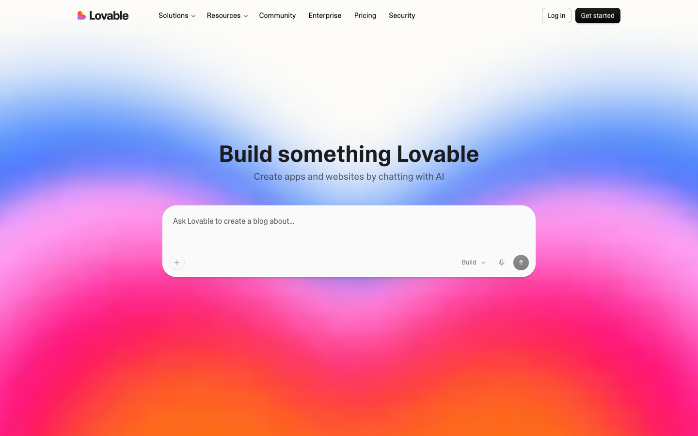
your whole website starts here
lovable.dev. One box, plain English.
Step 2 of 4
The landing page prompt
Build me a one-page landing page for my free guide "[GUIDE TITLE]".
I'm a financial advisor in Singapore. My audience is working adults aged 25-40.
Sections:
1. Hero: the guide title, one line on why it matters, and a button
"Get the free guide on WhatsApp" linking to
https://wa.me/[YOUR PHONE, e.g. 6591234567]?text=Hi! I'd like the free guide.
2. What's inside: my guide's 5 points as short bullets
3. About me: 2-3 sentences and a photo placeholder
4. Footer: my name, phone, email
Style: clean and professional, navy blue and gold, large text, mobile-first.
The button opens WhatsApp instead of a contact form on purpose: a form needs a database behind it, a WhatsApp chat lands straight on your phone.
Step 3 of 4
Talk until it looks right
Lovable builds for a minute, then shows your page in the preview
Ask for changes in the chat, one at a time:"Make the hero shorter" · "Add 3 client testimonials" · "Feel more premium" · "Show the mobile view"
Read every word before you ship it. Your name is on it, compliance rules apply.
The preview looks like a page you'd be proud to put in your bio. Thumbs up.
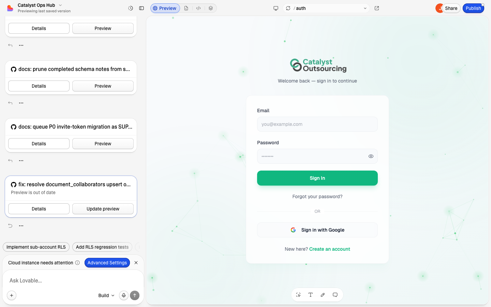
ask for changes here
live preview of your page
The editor: chat on the left, your page on the right. Same rhythm as Claude.
Step 4 of 4
Publish and use it
Click Publish (top right) and confirm. Your page is live at yourname.lovable.app
Open the link on your phone. Tap the WhatsApp button. It should start a chat with you.
Then put the link to work: Instagram bio, WhatsApp status, email signature
The live link works on your phone and the button messages you. Thumbs up.
when it's ready
Publish is one button, top right. Free lovable.app address included.
Bonus B · Ad images with ChatGPT
One image is a guess. Three is a test.
The image decides whether anyone stops scrolling. It's most of your ad's performance.
Your Module 2 cover is image #1. The same trick generates #2 and #3 in a minute.
Run them against each other and let the numbers pick, not your taste.
Your prompts travel: Prompt 2 from today works in ChatGPT word for word.Claude, ChatGPT, Lovable: same skill, different tools. Describe, look, refine.
Step 1 of 3
Generate images #2 and #3
Go to chatgpt.com, log in
Click Tools → Create an image (or just paste the prompt; it works either way)
Create a square 1:1 Facebook ad image for a free PDF guide called
"[GUIDE TITLE]". Professional financial-services style, navy blue
and gold, the guide title in large bold text, a small "FREE GUIDE"
badge, clean simple background, no people, space around the text.
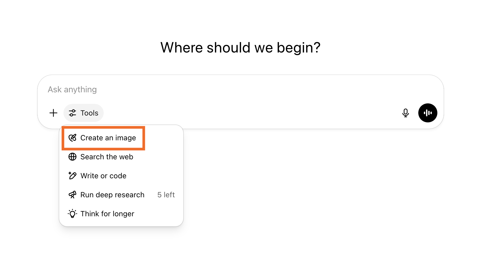
The Tools menu in ChatGPT. "Create an image" is the one boxed in orange.
Step 2 of 3
Fix it with words, then download
"Make the title text bigger"
"More contrast, the text is hard to read"
"Try a version with a Singapore skyline, subtle, in the background"
Check the spelling in the image. AI images still garble text sometimes; if the title is mangled, say "regenerate with the exact text [TITLE]"
Happy? Hover the image, click download
You have 1-2 new ad images saved, titles spelled correctly. Thumbs up.
Step 3 of 3
Test it in Ads Manager
Ads Manager → your campaign → select your ad → Duplicate
In the copy, change only the image. Same text, same form, same audience.
Run both for 3 days on the same budget
Keep the one with the cheaper leads, pause the other. That's A/B testing; you now do it.
Two ads live, identical except the image. Winner decided by cost per lead, not by taste.
Bonus C · Zapier
Every lead, auto-saved to a sheet
Right now your leads live inside Meta's Leads Centre. Fine for one campaign; messy by campaign three.
A Zap watches your lead form and copies each new lead into a Google Sheet the second it arrives
One sheet = your follow-up list, your notes, your history. Nothing slips.
Heads up: Facebook Lead Ads is a premium Zapier app. You need a paid Zapier plan (from about US$20/month). Not ready to pay? Download leads from Leads Centre weekly instead; this module will wait.
Step 1 of 5
Prepare the sheet
Create a new Google Sheet, name it something like "My Leads"
Row 1 = one column per detail: Name, Phone, Concern, Date
That's it. Zapier will fill the rows.
A sheet with 4 headers in row 1. Thumbs up.
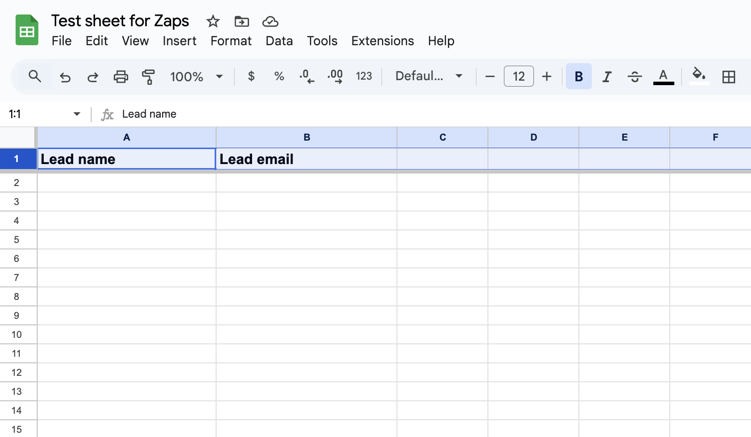
headers = your form's questions
Match the headers to what your instant form collects.
Step 2 of 5
The trigger: a new lead
zapier.com → Create → Zap
Trigger app: Facebook Lead Ads
Trigger event: New Lead
Connect your Facebook account (same login as Ads Manager)
Trigger shows Facebook Lead Ads + New Lead + your account. Thumbs up.
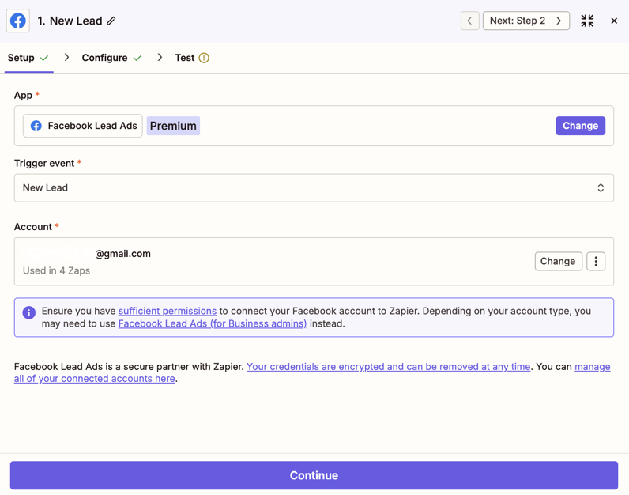
pick New Lead
The trigger: "when this happens". Note the Premium badge next to the app name.
Step 3 of 5
Point it at your form
Page: your Facebook Business Page
Form: the instant form you built in Module 4
Continue, then Test trigger: Zapier pulls in a sample lead
Test trigger finds your form and shows lead data. Thumbs up.
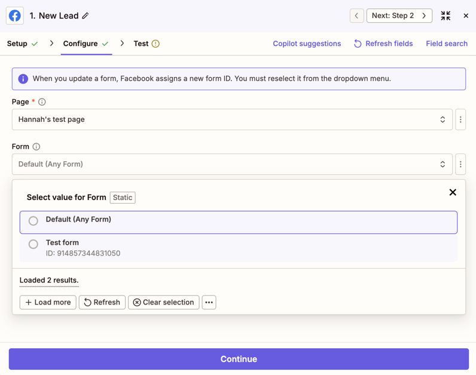
your Page
your form
Pick the Page, then the form. Both dropdowns load from your account.
Step 4 of 5
The action: write a row
Action app: Google Sheets
Action event: Create Spreadsheet Row
Connect your Google account, then pick your "My Leads" sheet and Sheet1
Action shows Google Sheets + Create Spreadsheet Row + your sheet. Thumbs up.
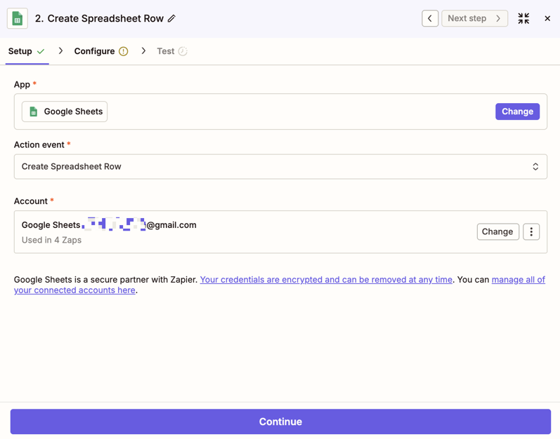
Create Spreadsheet Row
The action: "do this". One new row per lead.
Step 5 of 5
Map, test, switch on
Match each column to the lead data: Name → full name, Phone → phone number, Concern → your custom question
Test step: a row appears in your sheet. Go look at it.
Click Publish. The Zap now runs by itself, every lead, forever.
A test row sits in your Google Sheet and the Zap shows "On". Done.
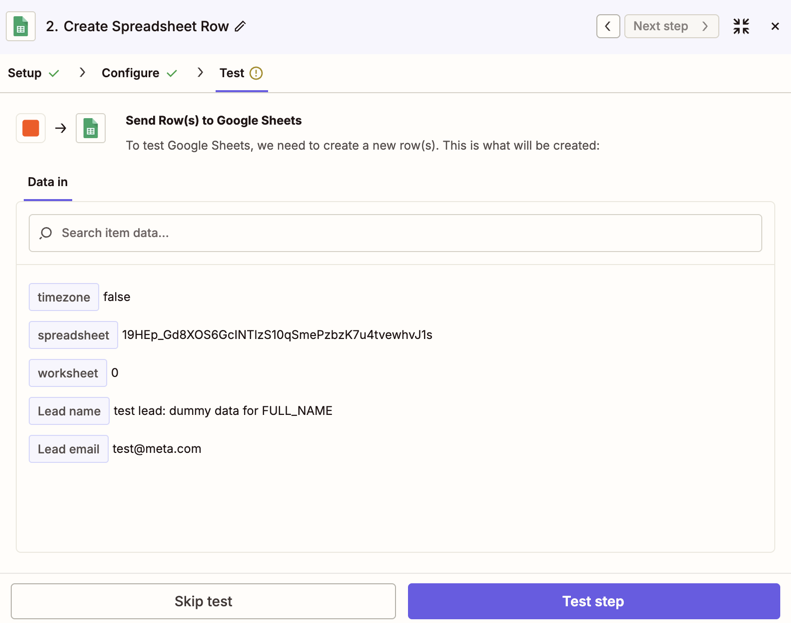
your lead's details, mapped
The test shows exactly what lands in each column before anything goes live.
Appendix
Quick fixes
Can't find the Create button
Top-left corner of Ads Manager. It's green. If the whole layout looks different, you're on business.facebook.com; go to adsmanager.facebook.com.
My Page isn't in the dropdown
You're probably not an admin of that Page. Check the Page's settings, or create a new Page at facebook.com/pages/create (2 minutes).
Image looks cropped or blurry
Ask ChatGPT: "give me the same image as a square 1:1, high resolution" and download the new version.
The AI's copy is too long
Reply: "Make the primary text shorter, under 125 characters." It will comply.
Form won't save
A required field is empty (usually the privacy policy or thank-you screen). Fill everything, or switch browser.
Way behind everyone?
Pair with a neighbour who's done, watch the projector, and finish at home tonight with the cheat sheet. Launching tomorrow still counts.